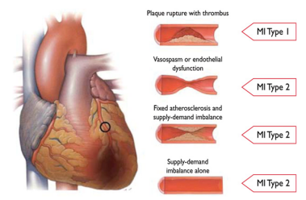

Myocardial Infarction
By: The Unusual Unicorns
By: The Unusual Unicorns
MMyocardial infarction is a term coined for an event that occurs when flow of blood through the heart is disrupted, but is more commonly referred to as a “heart attack”. As a result of the abnormal and/or ceased blood flow, the heart can be damaged due to the absence of oxygen supply. Typically someone will notice chest pain, acute pain in left-arm or left-neck region of the body during the event. There are several underlying risk factors that can contribute to myocardial infarction that include, but are not limited to obesity, smoking, old age, and high blood pressure.
About half of all deaths associated with myocardial infarction happen before the patient even gets to the hospital. Additionally, half of the survivors have to return to the hospital in the year after the incident. The seriousness of MI varies based on the patient’s health prior and the damage that was previously done to the heart. For example, the prognosis is even worse if the patient has the following conditions:
In the last two decades, the prognosis for heart attacks has improved greatly. Usually if a patient arrives at the hospital in a timely manner, the end result can be very positive.
The treatment received immediately after a heart attack is essential for the future prognosis of the patient and determines the health status later on in life.
An electrical defibrillator is used to restart the heart and the quicker that the heart is restarted, the less damage that happens to the heart.
Some techniques that can be used during a myocardial infarction include:
The next steps in treatment change due to each individual case and how seriously damaged the heart has been.
Treatment may also include surgical procedures.
"MI (myocardial infarction) is defined in pathology as myocardial cell death due to prolonged ischemia." 1
Thrombosis is a blood clot which forms inside the coronary artery. This in turn causes a block of blood flow to the heart.
Artherosclerosis is an important part of clots forming. Artherosclerosis is the when an artery has its blood flow slowed due to white blood cells accumulating on the artery and making the artery narrower. The white blood cells make inflammation in the artery and accumulate other dead cells such as cholesterol. This will then crystallize and the elasticity of the wall will diminish. Atherosclerosis may not produce symptoms for a very long amount of time but then will in the case of myocardial infarction may block circulation when broken off of the artery and cause thrombosis.
When the blood does not reach parts of the heart cells may die and be replaced by scar tissue, which can cause more problems later down the line. The heart will not pump as effectively due to the scar tissue transmitting electrical signals slower. Because the scar tissue transmits signals slower than normal heart tissue sudden cardiac death may present itself without warning.
The left coronary system will cause more substantial injury compared to the right due to the left coronary artery system covering more area than the right.
Furthermore, decreased removal of other metabolites in blood will occur, potentially leading to other lethal symptoms such as arrythmias.
1. What is the answer to this question?
2. What is the answer to this question?
3. What is the answer to this question?
4. What is the answer to this question?
5. What is the answer to this question?
6. What is the answer to this question?
7. What is the answer to this question?
8. What is the answer to this question?
9. What is the answer to this question?
10. What is the answer to this question?
Question 1: The correct answer is the Answer 1.
Question 2: The correct answer is Answer 2.
Question 3: The correct answer is Answer 3.
Question 4: The correct answer is Answer 4.
Question 5: The correct answer is Answer 1.
Question 6: The correct answer is Answer 2.
Question 7: The correct answer is Answer 3.
Question 8: The correct answer is Answer 4.
Question 9: The correct answer is Answer 1.
Question 10: The correct answer is Answer 2.
You answered them all right!
What does myocardial infarction literally mean?
What is it called when there is a formation of a blood clot from developed fatty plague in the coronary artery?
Why does scar tissue in the heart create problems later on?